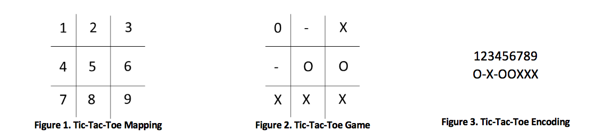

Problem made by Lockheed Martin, is CodeQuest 2018 Problem 17
Tic-tac-toe is a game for two players, X and O, who take turns marking the spaces in a 3 x 3 grid. The player who succeeds in placing three of their marks in a horizontal, vertical or diagonal row wins the game.
The following example game is won by the first player, X:
You have been hired by CoolGames, Inc. to create a tic-tac-toe checker program that they can use to determine whether X wins, O wins, or if a tie has resulted.
The first line of the file Prob17.in.txt will contain a positive integer T denoting the number of test cases that follow. Each test case will have the following input:
• A single line of characters denoting the current state of a Tic-Tac-Toe game
The game state will represented as follows:
<1 VALUE><2 VALUE><3 VALUE><4 VALUE><5 VALUE><6 VALUE><7 VALUE><8 VALUE><9 VALUE>

In Figure 1, it shows how the values in the tic-tac-toe board are mapped. In Figure 2, it shows an example tic-tac-toe game being played where "-" means no one has played in the area. In Figure 3, it shows how the tic-tac-toe game is encoded into a string of values based on the board mapping.
8
O-X-OOXXX
XOX-OXO-X
X-O-XO--O
OXOXXOXOX
--X-X-XOO
XXOXO-O--
XOXXOOOXX
---------
For each test case, your program should output one line in the following format:
• The original input line followed by a single space, an equal sign, and another single space
• One of the following three phrases depending on the outcome of the game:
o X WINS
o O WINS
o TIE
O-X-OOXXX = X WINS
XOX-OXO-X = X WINS
X-O-XO--O = O WINS
OXOXXOXOX = TIE
--X-X-XOO = X WINS
XXOXO-O-- = O WINS
XOXXOOOXX = TIE